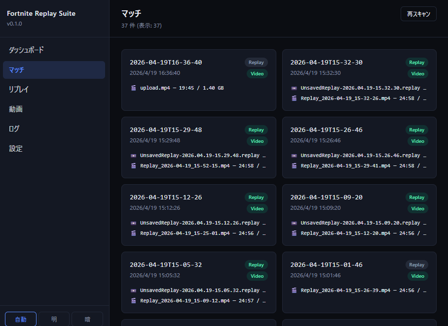
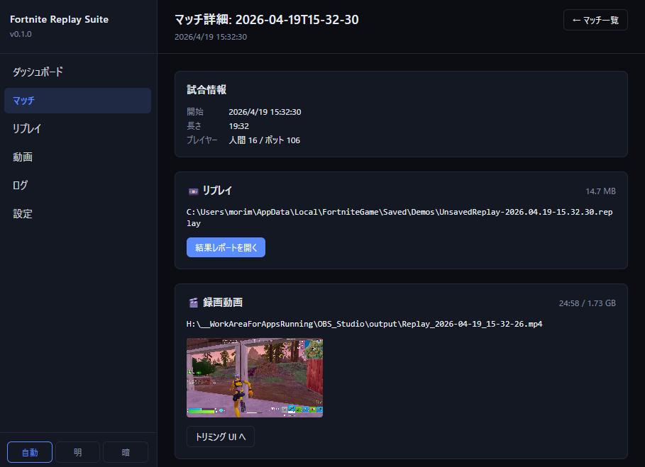
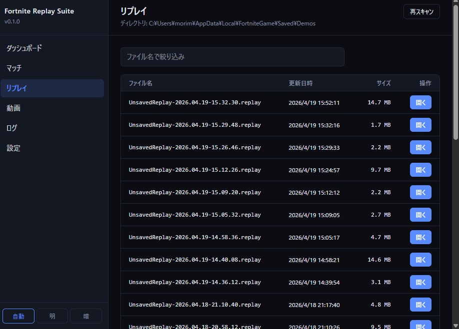
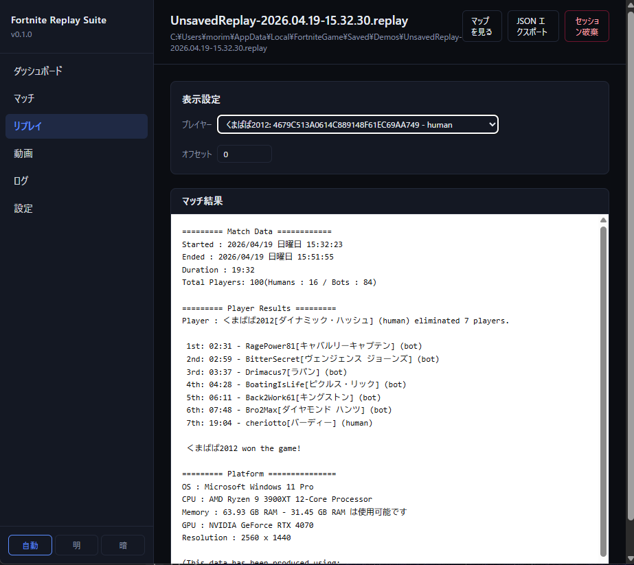
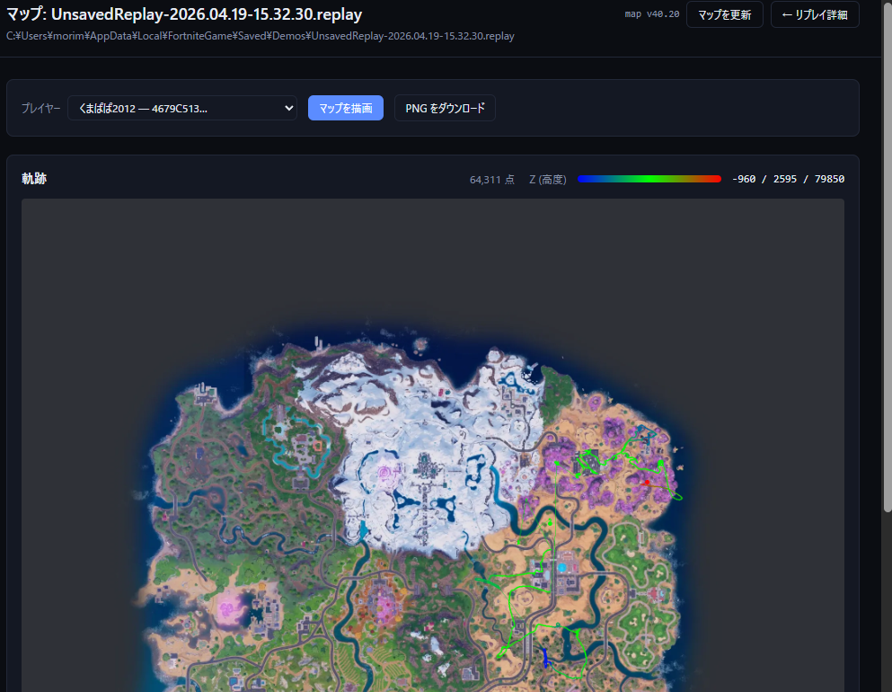

リプレイは Fortnite 自体が出力する .replay ファイル単体。マッチは、リプレイと OBS の録画動画（.mp4）を時刻でペアリングした「論理的な試合単位」です。マッチは必ずリプレイを持ちます（動画が無い試合はリプレイのみのマッチとして表示されます）。
1マッチ一覧
サイドバーの「マッチ」または /matches を開くと、リプレイと動画のペアカードが新しい順に並びます。各カードには 2 つのバッジが付き、何が揃っているか一目で分かります。

| バッジ | 色 | 意味 |
|---|---|---|
| Replay | 緑 | 常に表示（マッチは必ずリプレイを持つ） |
| Video | 緑 | 録画動画がリンク済み（自動または手動） |
| Video | 灰 | 録画動画が未リンク（OBS 録画なし、またはペアリング失敗） |
| Summary | 緑 | リプレイ解析済み（キル数・勝敗の集計が完了） |
| Trimmed | 緑 | 動画のトリミングが完了し、切り出しファイルが存在する |
| Kill Clip | 緑 | Kill クリップ集の生成が完了 |
Victory Royale の試合にはカード左上に 👑 アイコンが表示されます。
右上の「再スキャン」ボタンで、demos_dir と obs_recording_dir を再走査し、ペアリングを再計算します。新しいリプレイ・動画が増えたら押してください。
2マッチ詳細
カードをクリックすると /matches/:id に遷移し、その試合の詳細が表示されます。

| セクション | 内容 |
|---|---|
| 試合情報 | 開始時刻 / 試合長 / 人間プレイヤー数 / Bot 数。replay_parser による後読みのため開いてから 1〜2 秒遅れて埋まる |
| 処理状態 | 試合終了後の自動処理（リプレイ解析・動画リンク・キルオフセット計算）の進捗を SSE でリアルタイム表示。処理済みの各ステップは緑チェックになる |
| 試合集計 | キル数・勝敗（Victory / Defeat ボタンで手動設定も可）。Summary バッジが付いている場合はリプレイ解析から自動入力 |
| 📼 リプレイ | .replay のフルパスと「HTML レポートを開く」ボタン。クリックでリプレイ詳細（§4）に遷移 |
| 🎬 録画動画 | 動画がリンク済みの場合はサムネイルを表示。未リンクの場合は「自動検出」ボタンと手動リンク用ドロップダウンが表示される（詳細は下記） |
| Kill クリップ集 | Step 1: キルオフセット計算 → Step 2: キルシーンを連結した mp4 を生成。Kill Clip バッジが付くと生成済み |
録画動画のリンク
動画が未リンクの場合、マッチ詳細の「🎬 録画動画」セクションに 2 つの方法が表示されます。
-
1自動検出
「自動検出」ボタンをクリックすると、録画フォルダを走査してリプレイと時刻が合う動画を自動でリンクします。成功すればそのままキルオフセット計算まで進みます。
-
2手動リンク
自動検出で見つからない場合は、ドロップダウンから録画フォルダ内の動画を選んで「リンク」ボタンで保存できます。
動画リンク・トリミング結果・キルオフセット等は ~/.fortnite-suite/matches/<id>.json（サイドカーファイル）に永続化されます。サービスを再起動しても保持されます。
2a試合終了後の自動処理
ログ監視が動作中（06 章）であれば、試合終了を検出して OBS がリプレイバッファを保存した直後に、以下の処理が自動で実行されます。
-
1リプレイ解析（Summarize）
replay_parser が最新の
.replayをパース。キル数・キル時刻・勝敗を算出し、Summaryバッジが付きます。 -
2動画の自動リンク
録画フォルダを走査し、試合時刻と最も合う動画を自動でリンク。成功すれば
Videoバッジが緑になります。 -
3キルオフセット計算
動画リンクに成功した場合、キル時刻を動画上の秒数に変換して保存。Kill クリップ生成の準備が完了します。
各ステップの進捗はダッシュボードのバナーとマッチ詳細の「処理状態」セクションにリアルタイムで表示されます。
自動処理が正常に完了すると、Summary・Video・Trimmed バッジが緑になります。Kill Clip バッジは Kill クリップ集を別途生成するまで緑になりません。自動処理の詳細なフローと SSE イベントについては ログ監視 §4 — システムイベント を参照してください。
OBS がリプレイバッファを保存するまでに時間がかかる場合、自動リンクが失敗することがあります。その際はマッチ詳細の「自動検出」または「手動リンク」で後から動画を紐付けてください。
2bKill クリップ集
試合中に発生したキルシーンを録画動画から切り出して 1 本に連結した mp4 ファイルを作成する機能です。マッチ詳細の「💥 Kill クリップ集」セクションから 2 ステップで操作します。
以下がすべて揃っていないと操作できません。
- Trimmed バッジが緑（動画がリンク済みかつトリミング済み）
- 設定ページで Epic Display ID が登録済み（自プレイヤーのキルを識別するために使用）
- ffmpeg / ffprobe が PATH に存在
-
1Kill オフセットを計算
「Kill オフセットを計算」ボタンをクリックすると、リプレイ解析結果と録画動画を突き合わせて自プレイヤーのキル時刻を検出し、トリミング動画内の秒数に変換します。成功すると「✓ N 件を登録しました」と表示されます。
-
2Kill クリップ集を作成
「Kill クリップ集を作成」ボタンをクリックすると、各キルの前後 10 秒をキーフレーム境界にスナップして切り出し、全クリップを 1 本に連結します。ffmpeg の Stream copy モードで処理するため再エンコードは行わず高速です。完了すると
Kill Clipバッジが緑になります。
| 項目 | 詳細 |
|---|---|
| 各キルの切り出し範囲 | キル前後 各 10 秒（キーフレーム境界にスナップするため実際の開始位置は数フレーム前になる場合あり） |
| 出力ファイル名 | {トリミング動画ファイル名}_kills.mp4 |
| 保存先 | OBS 録画フォルダ（トリミング動画と同じ場所） |
| コーデック | 元動画と同一（Stream copy、再エンコードなし） |
3リプレイ一覧
/replays は demos_dir 配下の .replay ファイルを直接一覧する画面です。マッチ一覧（§1）が「論理的な試合単位」だったのに対し、こちらは「ファイル単位」の素直なリストです。

4リプレイ詳細
リプレイ行をクリックすると /replays/:id に遷移し、Scriban テンプレートで生成されたマッチ結果テキストが表示されます。

表示されるテキストは replay_parser（.NET）が .replay をパースし、Scriban テンプレートでレンダリングした結果です。改行や空白が保持されるよう <pre> でラップして表示しています。プレイヤー切り替えのドロップダウンで、自分以外のプレイヤー視点の情報も確認できます。
同じリプレイの初回オープン時は replay_parser による解析で数秒かかりますが、結果は suite_core 側にキャッシュされ、2 回目以降は即座に表示されます。
5移動軌跡マップ
リプレイ詳細から「Map を見る」ボタンをクリックすると /replays/:id/map に遷移し、選択中プレイヤーの試合中の移動軌跡がマップ画像上にレンダリングされます。

- 背景画像は
map_apiサービスが起動時に最新マップを自動取得・合成（map_tool/combined_map.webp） - 軌跡は Z 軸（高度）に応じてグラデーション着色され、画面右下に凡例が表示される
- 「画像保存」リンクから PNG をダウンロード可能
シーズン更新等でマップ画像が古くなった場合は、移動軌跡マップページ右上の 「マップを更新」 ボタンをクリックしてください。fortnite.gg から最新のマップタイル（8×8 枚）をダウンロードして合成し、表示に反映します。更新後はバージョン番号がトーストで通知されます。すでに最新の場合は「最新バージョンです」と表示されます。
なお、サービス起動時にも自動でバージョンチェックが走り、古ければ自動更新されます。